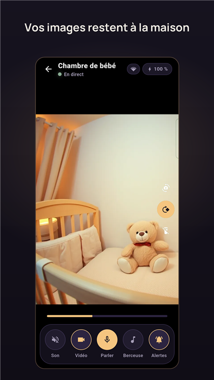
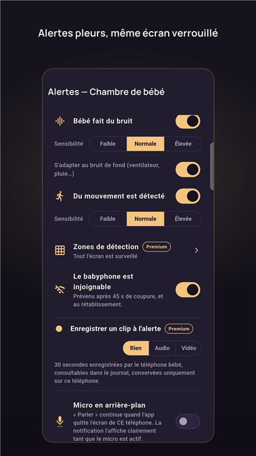
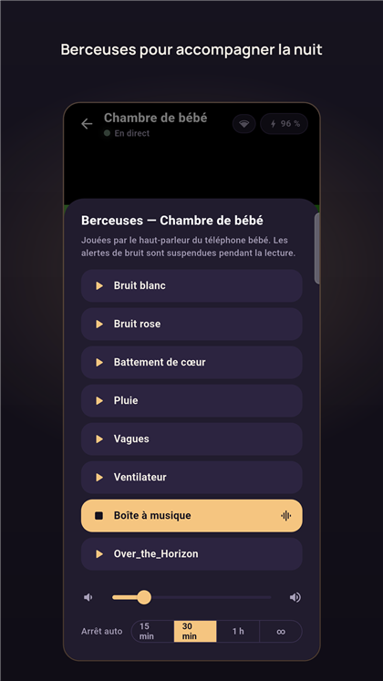

Simple comme deux téléphones
- Installez Halune sur deux téléphones connectés au même WiFi — le vieux téléphone du tiroir fera une parfaite caméra.
- Choisissez « Chambre » sur l'un, « Parent » sur l'autre, puis scannez le QR code affiché : l'appairage est chiffré, sans compte ni inscription.
- Posez le premier près du lit. La veille commence : vidéo, son et alertes toute la nuit, même écran verrouillé.
L'essentiel est gratuit, pour toujours
- Vidéo et audio en direct, vision de nuit
- Alertes pleurs, mouvement, batterie, hors ligne
- Répondre à bébé d'une voix douce
- Écoute en arrière-plan
- Berceuses, zoom, rotation
- Plusieurs parents en même temps
- Journal des événements de la nuit
- Fonctionne même sans Internet
Premium, un seul achat — pas d'abonnement : accès à distance en 4G/5G (toujours en direct via votre propre box), multi-chambres, berceuses personnalisées, zones de détection, rapport de nuit et flux compatible Home Assistant. Essai gratuit de 3 mois au lancement.



Pas une promesse : une architecture
Halune ne collecte aucune donnée, parce qu'elle n'a nulle part où les envoyer.
Il n'existe aucun serveur de l'éditeur : le flux circule en pair-à-pair sur votre réseau, chiffré de bout en bout, et la mise en relation des téléphones est elle aussi chiffrée. Pas de compte, pas de publicité, pas de traqueur. Tout est écrit noir sur blanc dans la politique de confidentialité — elle est courte, c'est voulu.